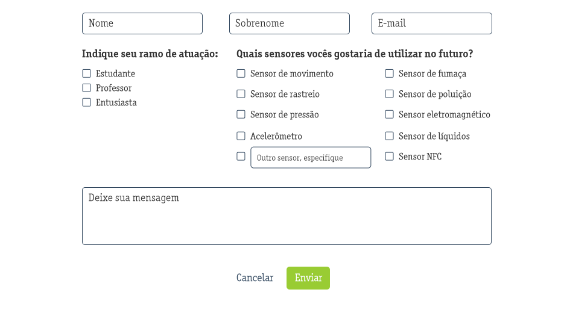

Baseado na plataforma de prototipagem eletrônica livre Arduíno, foi desenvolvido um shield com sensores de luminosidade, contato, umidade, ruído e luz.
Uma biblioteca em JavaScript (node.js) foi criada para simplificar o acesso aos sensores pelos desenvolvedores e enviar os dados diretamente a uma plataforma baseada na nuvem.
Os dados são enviados a uma plataforma de alta performance escalável, que foi desenvolvida para ser flexível e modular para facilitar a construção de aplicações M2M baseadas em dados em tempo real.
GET statuses/mentions_timeline
Returns the 20 most recent mentions (tweets containing a users's @screen_name) for the authenticating user. The timeline returned is the equivalent of the one seen when you view your mentions on twitter.com. This method can only return up to 800 tweets.
GET statuses/user_timeline
Returns a collection of the most recent Tweets posted by the user indicated by the screen_name or user_id parameters. User timelines belonging to protected users may only be requested when the authenticated user either "owns" the timeline or is an approved follower of the owner.
GET statuses/user_timeline
Returns a collection of the most recent Tweets posted by the user indicated by the screen_name or user_id parameters. User timelines belonging to protected users may only be requested when the authenticated user either "owns" the timeline or is an approved follower of the owner.
GET statuses/user_timeline
Returns a collection of the most recent Tweets posted by the user indicated by the screen_name or user_id parameters. User timelines belonging to protected users may only be requested when the authenticated user either "owns" the timeline or is an approved follower of the owner.
Diga-nos seu nome e e-mail e teremos o prazer de lhe fornecer mais informações sobre o nosso Kit Desenvolvimento Internet of Things.
